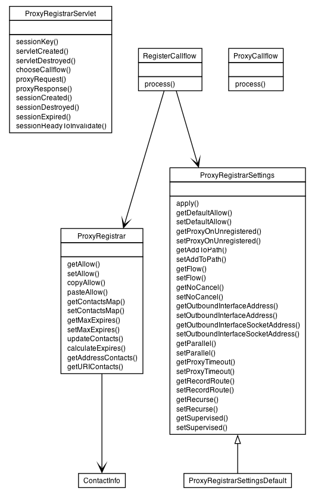

|
|||||||||
| PREV PACKAGE NEXT PACKAGE | FRAMES NO FRAMES | ||||||||

| Class Summary | |
|---|---|
| ProxyCallflow | |
| ProxyRegistrar | |
| ProxyRegistrarServlet | This class implements an example B2BUA with transfer capabilities. |
| ProxyRegistrarSettings | |
| ProxyRegistrarSettingsDefault | |
| RegisterCallflow | |
|
|||||||||
| PREV PACKAGE NEXT PACKAGE | FRAMES NO FRAMES | ||||||||